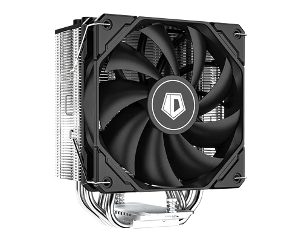
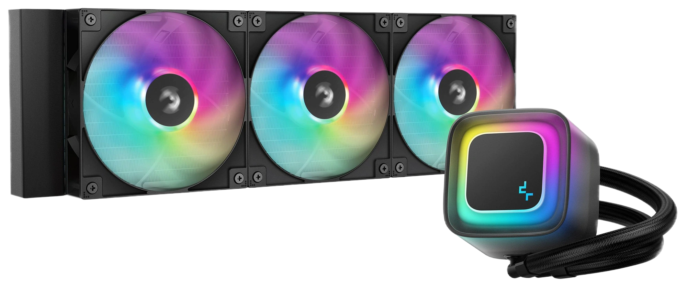

|

Для процессоров: до 150–180 Ватт TDP. Плюсы: предельная надежность, нет риска протечки жидкости. Проверка: высота башни в мм по паспорту корпуса.
|

Для процессоров: свыше 200 Ватт TDP. Плюсы: высокая скорость отвода тепла, свободный сокет. Проверка: посадочные места под радиатор 240 / 360 мм.
|